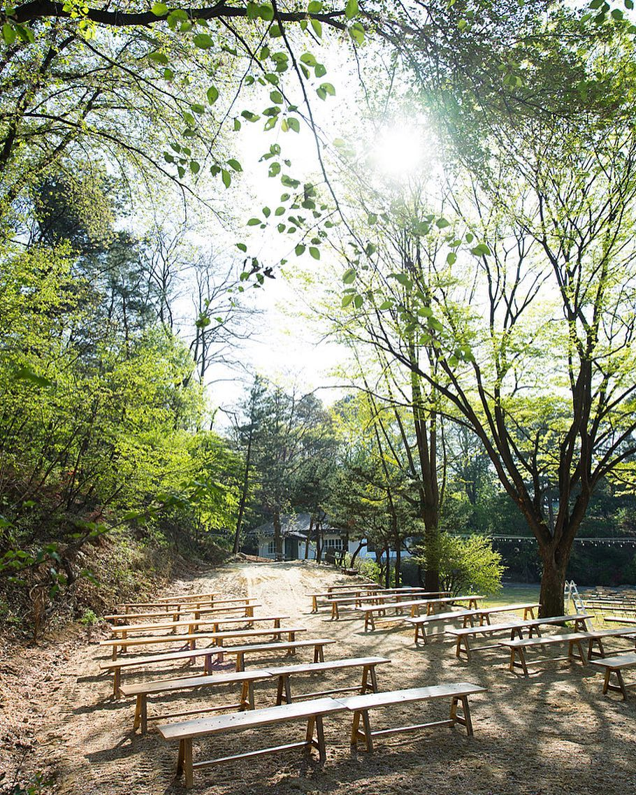
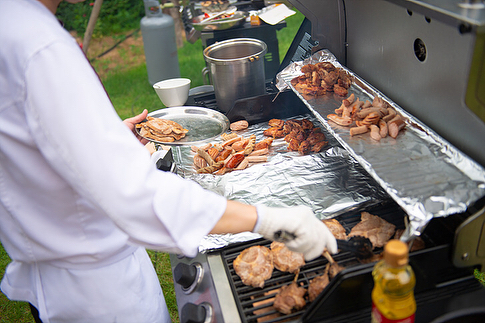
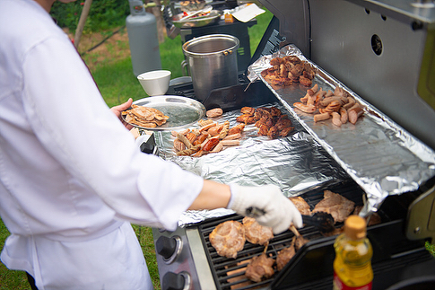

어떤 오후 우리의 인생에서
절대 잊지 못할 날에 당신을 초대합니다.
안녕하세요? 민창과 예림입니다 :)
조용한 숲속에서 저희 둘의 혼인을 약속하는 자리를 마련했습니다. 9월 8일 하루 동안 설레는 마음으로 맞이할게요.
예식장은 4시부터 열립니다. 서두르지 말고 여유있게 오셔도 괜찮아요. 예식은 4시 30분에 시작할 예정입니다. 저녁에는 바베큐와 와인을 준비했습니다. 가을을 맞이하며 대화를 나누는 여유로운 식사 자리가 되기를 바랍니다.
저녁식사 후에는 함께 즐길 수 있는 애프터 파티를 마련했습니다. 시간이 되시면 저희 둘과 함께 더 머물다 가세요. 소중한 날을 당신과 오래도록 보내고 싶습니다.
예식장 주소는 서울시 서초구 샘마루길 11. 보넬리 가든입니다. 버스를 타고 서울특별시어린이병원 정류장에 내리면 예식장이 보입니다. 주차장은 강동송파예비군훈련장 앞입니다. 거리는 가깝지만 비탈길을 내려와야 하기 때문에 경사진 길이 불편한 일행이 있다면 예식장 앞에 먼저 내려주세요.

 
